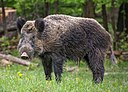
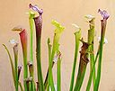
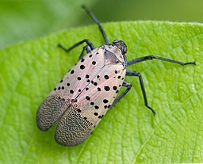

South Carolina Wildlife Report
About
Help
Resources
Species Identification
Wildlife

Plants & Fungi

<<<<<<< Updated upstream
Insects
=======
Insects
>>>>>>> Stashed changes 
Management Resources
references
Invasive Plant Species of South Carolina: SC Plant Atlas
National Invasive Species Information Center: South Carolina
Earth's Endangered Creatures
Endangered Species- South Carolina Wildlife Federation
USFWS: South Carolina Endangered, Threatened, and At-Risk Plant Species
NRCS: Major Invasive Species of Concern in South Carolina
USDA: Economic and Social Impacts of Invasive Species
USDA: Environmental and Ecological Impacts of Invasive Species
USDA: Human Health Impacts of Invasive Species
Invasive Species of South Carolina Forests
South Carolina Plant Society: Invasive Species
American Bird Conservancy